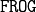

2.3. Space Discretization¶
2.3.1. Goal and Perquisite:¶
This tutorial presents how to use the different space discretization available in  to order the results in the Diagram.
You should be familiar to the standard command presented in the get started tutorial.
The file needed to run this tutorial are located at: Frog/Doc/Tutorial_files/Traj/Tuto_get_strated for the MD trajectory and Frog/Doc/Tutorial_files/Space_discretization for all the other documents.
First is presented how to built the parameter file and then how to analyse the results.
2.3.2. Parameter file:¶
The MD is net water in a liquid-gas equilibrium. The water forms a 2D slab along the laboratory XY-axis. The small Z has no water (vacuum), in the middle of theZ-axis is located the water (bulk phase) and the high Z has no water (vacuum). Therefore, in this MD there are 2 liquid-gas interfaces: one at the bottom and one at the top of the water slab.
One can described a property (for instance the molecular orientation) with respect to the molecule position from these interfaces. In , two methods are available:
using the molecule absolute position with respect to a laboratory axis: ‘Plane_ij’ geometrical selection
using the molecule layer number with respect to the interface:’Layer’ geometrical selection.
We will see in the analysis part what results is obtained, first let’s see how to required these kind of analysis in the parameter file.
Note
All the available analyse in can be run using any geometrical selection
2.3.2.1. Plane¶
To require a plane selection, chose the axis from which the result will be averaged in the diagram parameters:
L_diagram_analysis_to_perform = [['density', 'Plane_xy', [150]]]
In this case, the Z-laboratory axis is discretized using 150 bin. The molecule are regrouped using there Z-position, and the X and Y laboratory axis are averaged. The obtained diagram presents the result stored in 2D-slab. Let’s say that the MD box dimension is 20x20x150 Angstrom. In this case, each slab dimension is 20x20x1 Angstrom. There are 150 slabs, put in top of each other they discribe all the MD box. Molecule contributing to the i-th slab has it Z position between [i-1, i] Angstrom in this case.
To define slab in the X axis, use ‘Plane_yz’, in the Y axis use ‘Plane_xz’ and in Z use ‘Plane_xy’.
Note
You can define a Plane geometrical selection even if the geometry of your system is bulk. Or define a X-slab even if the interface of your MD is in the Z-direction. You can for instance this kind of analysis to check symetry of your system: a bulk simulation should return identical slab values wathever the direction of the slab.
2.3.2.2. Layer¶
To require a plane selection, you have to initialize the GlobalParameter.layer_which_radii_MT and the set the geometrical discretization to ‘Layer’ in the diagram parameters:
GP.layer_which_radii_MT = 'MT'
L_diagram_analysis_to_perform = [['density', 'Layer', [6]]]
Contrarily to the Plane geometrical discretization, the Layer one is less flexible. Indeed, it is related to the structure of your system: it should detect automatically the interfaces. Therefore, contrarily to the Plane analysis, you cannot define in the parameter file the ‘’axis’’ of the discretization.
The layer attribution is made thanks to the python module Pytim (https://marcello-sega.github.io/pytim/index.html). In the case coverated by , Pytim assign automatically for molecule at a 2D liquid-gas interface a layer. Among the many parameter available in Pytim, in the atomic radii used for this attribution can be tuned using the parameter GlobalParameter.layer_which_radii_MT. For a standard use, we recommand to set it to ‘MT’, the default value. The atomic radii for each molecule are attributed thanks to the MT defined in .
The other parameter is the number of layer used to described each interface. In the upper example, 6 layer are used per interface. Therefore, for the upper interface, a molecule can be assigned to 6 layer, or to the bulk. In the case of water, each ‘layer’ takes approximatively 3 angstrom in the normal direction (Z axis). However, contrarilly to the Plane space discretization, this one takes into account the thermal fluctuation at the interface.
2.3.3. Analysis:¶
Let’s see what are the results of these 2 kind of discretization. Once the calcullation is performed, run the analysis script in the same directory using jupyter notebook.
Note
Ici je ne sais pas trop quoi mettre dans la page du wiki. J ai essayer de mettre pas mal d info dans le jupyter: ce n est pas la peine de faire des copier coller? L important c est que l utilisateur joue avec le notebook a mon sens. Ce qui suis dans le wiki est plus une presentation de ce qui est presente dans le notebook plutot que des ‘’vrai informations/explications’’.
In the beggining of the analysis script is explained how single molecule are treated according to the space discretization used. Then the obtain diagrams.
2.3.3.1. Individual values¶
In the analysis script is presented in more details that:
Plane
The slice attribution depends on the axis that is used for the discretization, the box size and the molecule mean position. This attribution is made for every molecule, for every time step and for every diagram.
Layer
A first layer attribution is made once for all the molecule at each time step using for maximal layer number GlobalParameter.layer_nbr_max. Then, for every diagram, the layer number of the molecule is used for the discretization according to the mximal layer number of each diagram.
2.3.3.2. Diagrams¶
For each analysis required in the parameter file, the obtained diagram are plotted. We recommand to take a special attention to the density diagram to understand what the layer represents.
Finally, at the end of the analysis script, a short code presents how to pass from a diagram with N layer to a diagram with less layer.